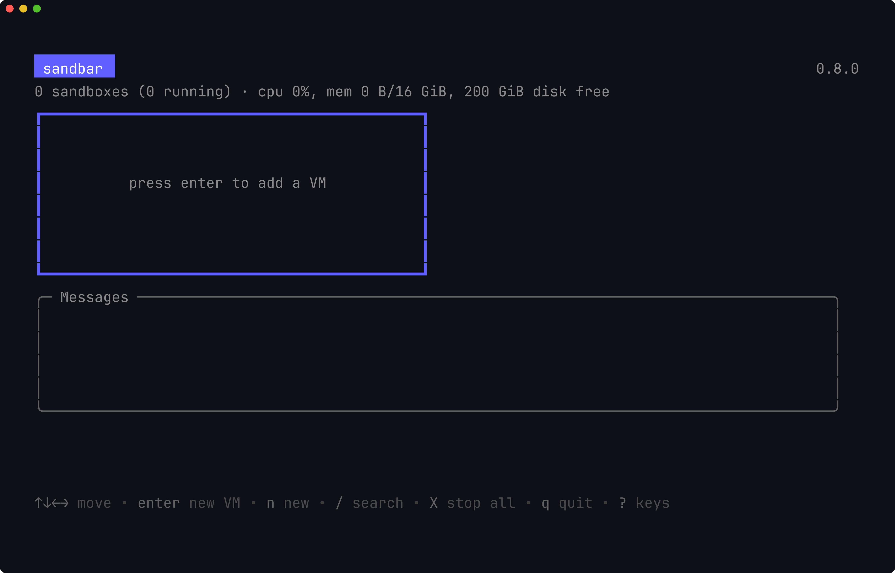
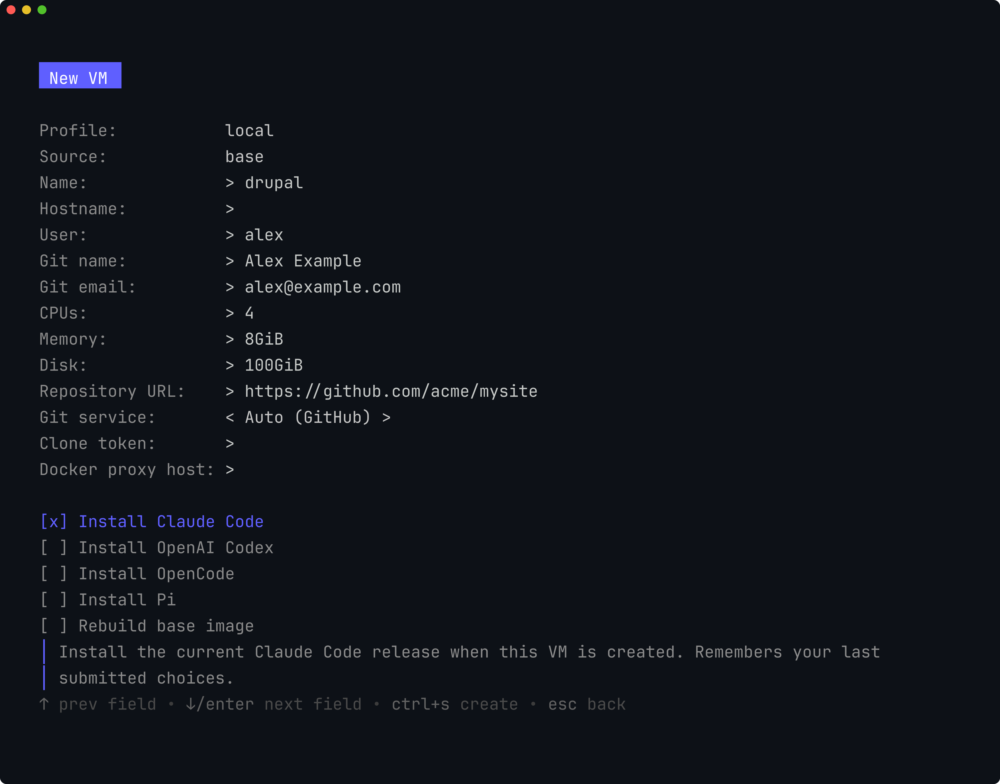
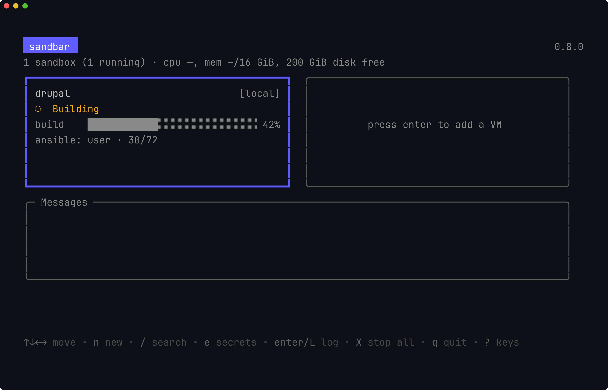
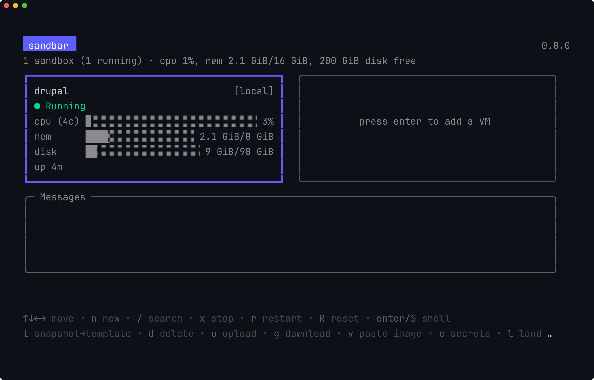

Quickstart: a Drupal site with DDEV
Sandbar makes it easier to run a coding agent inside a virtual machine, where it can safely run multi-step workflows without you approving every command, and work on your whole site, not just its code. It runs Drush, imports config and rebuilds caches inside a VM of its own, away from your workstation.
This tutorial walks through setting up sandbar for a Drupal project that uses DDEV, because Drupal is where sandbar started. Sandbar isn't only for Drupal, though: each VM is a full Linux machine with Docker, so the same approach works for any project you can run on Linux.
In this tutorial you'll:
- Create a VM on your own machine that clones your Drupal project.
- Start the site with DDEV inside a sandbar VM.
- Open the site in your browser, and have Claude Code run Drush for you.
By the end, you'll have a VM with your site running in it, ready to hand to an agent.
Before you start
You need:
- Sandbar installed on macOS or Linux. See Install sandbar.
- A Drupal project that already uses DDEV.
- Access to clone the project's Git repository, for example
https://github.com/acme/mysite. No DDEV project handy? Fork the DrupalizeMe demo site and use your fork. You'll push to it in the next tutorial. - A token limited to that repository, with permission to push to it (Contents: Read and write on GitHub). The VM uses it to clone a private repository, and to push in the next tutorial. Coding agents in the VM can do anything the token allows, so don't use one with access to your whole account. For GitHub, create a fine-grained token with these permissions; for GitLab, see GitLab token permissions.
- A Claude account that can use Claude Code.
- If you run DDEV on your Mac, stop it with
ddev poweroff, so the VM's site can use ports 80 and 443.
Note: The first VM downloads sandbar's base image (about 1 GB), and the first ddev start downloads DDEV's container images.
1. Open the board
In a terminal, from any directory, run:
The first time, you'll see a Welcome to sandbar screen. Press enter to continue to the board.
The board shows your machine's CPU, memory and free disk at the top, and an empty tile that says press enter to add a VM.

2. Create a VM that clones your project
Press enter on the empty tile, or press n, to open the New VM form. Fill out the configuration options:
- In Name, type
drupal. - Check Git name and Git email. Fill them in if they're empty, so commits made in the VM are yours.
- In Repository URL, paste your project's HTTPS clone URL. It can end in
.gitor not. - Paste your token in Clone token.
- Move down to Install Claude Code and press
spaceto check it. - Press
ctrl+sto create the VM.
Leave everything else as it is.

When you press ctrl+s, sandbar copies its Debian Linux base image into a new Lima VM on your machine, gives it the CPUs, memory and disk from the form, and starts it. Then it sets up your user and Git identity, installs Claude Code, and clones your repository into the VM.
A drupal tile appears with a progress bar.

When the tile shows ● Running and the bar is gone, the VM is ready.

If the tile turns red
The build failed. Press L on the tile to read its log, then see Troubleshooting.
3. Open a shell in the VM
With the drupal tile selected, press S. You're now in a shell inside the VM, running in tmux. tmux keeps the session running when you leave it, so Claude Code and the site keep working while you're back on the board, and you return to the same place when you press S again.
Sandbar cloned your project to a path that matches its URL, ~/<host>/<owner>/<repository>. Go there:
4. Start the site with DDEV
DDEV is already installed in the VM. Start the project:
When it finishes, it prints your site's URL:
Install the project's dependencies:
Then give the site a database. Use a dump of your site if you have one, or install a fresh site.
With a database dump:
- Press
ctrl+a, thend, to detach from tmux and go back to the sandbar board. - Press
uon thedrupaltile. Find your dump, for examplemysite.sql.gz, and pressenter. You can also drag the file into the terminal window. - The destination is your project folder in the VM. Press
ctrl+sto copy the file to the VM. -
Press
Sto return to the shell. Import the dump, then delete it, so it can't end up in a commit:
Without a dump, install a fresh site:
Either way, the database lives in the VM. Nothing on your workstation or your live site changes.
5. Open the site in your browser
On your workstation, open the URL from ddev start, for example https://mysite.ddev.site.
Your browser warns that the connection isn't private. That's expected, because DDEV's certificate comes from inside the VM. Continue to the site, and you'll see your Drupal front page.
If you don't see your Drupal site
-
Can't connect, or a different site: either your workstation runs Linux, where sandbar can't bring the VM's ports 80 and 443 to you, or a DDEV project on your Mac is already using them. In the VM, move DDEV's router to two other ports:
Then open
https://mysite.ddev.site:8443, and add:8443to the links later on this page. -
Address not found: some networks block
*.ddev.sitenames. Add127.0.0.1 mysite.ddev.siteto/etc/hostson your workstation.
6. Start Claude Code
Back in the VM shell, in your project directory, run:
The first time, sandbar asks two questions:
- Enable Claude Code Remote Control for every interactive session? Press
enterfor no. - Start sessions in bypass permissions mode instead of auto mode? Type
yand pressenter.
Bypass permissions mode lets Claude Code run commands without asking you first. That's reasonable in a disposable VM. In fact, it is kind of the whole point of setting all of this up. See the Security model for what the VM does and doesn't isolate. If the VM's token can push to a repository your team or a client uses, you might prefer auto mode; see Choose a permission mode.
Then sign in to Claude Code. It prints a link: open it in your workstation browser, sign in, and copy the code it shows. Paste the code into Claude Code and press enter. Answer Claude Code's first-run questions, and trust the project folder.
Claude Code opens with bypass permissions on at the bottom of the screen.
7. Ask Claude Code to run Drush
Type this prompt and press enter:
Claude Code runs ddev drush status, ddev drush cr and ddev drush uli without asking for approval, and gives you a link like https://mysite.ddev.site/user/reset/1/….
Open the link in your workstation browser. You're logged in as the admin user.
What you built
You now have a VM with your project cloned in it, a DDEV site you can open from your workstation, and Claude Code working in that VM without permission prompts.
To go back to the board, detach from tmux by pressing ctrl+a, then d. Claude Code and the site keep running.
Next steps
- Your first pull request: the everyday loop of agent work, review and pull request.
- Sign in to your coding agent: use Codex, OpenCode or Pi, and choose permission modes.
- Open a web server in your browser: reach other servers in the VM, and trust DDEV's certificates.
- The board: every key on the board.